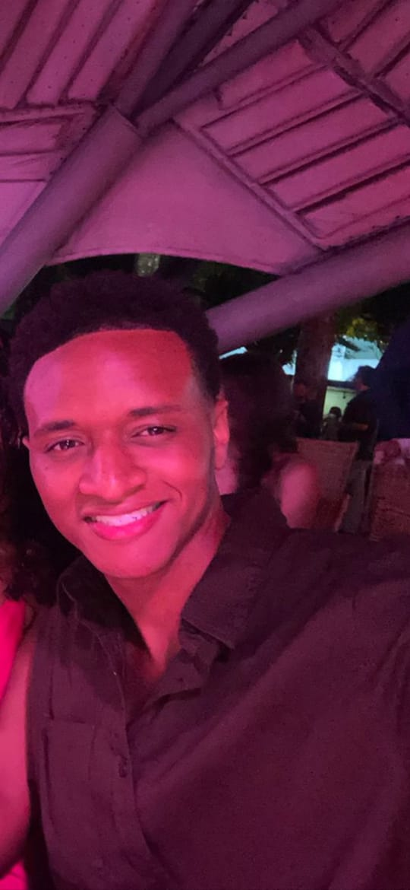

Transformo dados em
inteligência estratégica
Auxiliar Administrativo II na ASSIST, setor de Controladoria. <<<<<<< HEAD Desenvolvo automações em VBA e Python, pipelines com Power Query, dashboards em Power BI e relatórios gerenciais em PowerPoint que apoiam a tomada de decisão da organização. Reconhecido como Colaborador Destaque em 2024 e atuando ativamente na redução de 35% no gasto anual com Correios através do mapeamento de áreas com dificuldade de entrega na base de dados. ======= Desenvolvo automações em VBA e Python, pipelines com Power Query e dashboards em Power BI que apoiam a tomada de decisão da organização. >>>>>>> e2b4241b7fb62301d4b897c9cb96f74f019be32f
Ver Projetos Meu Perfil
Design de Interface · Behance
UPA Ágil
Projeto de design desenvolvido no início da graduação em Sistemas de Informação. Proposta de interface para agilizar o atendimento em UPAs, com foco em usabilidade e experiência do usuário.
Ver no Behance →